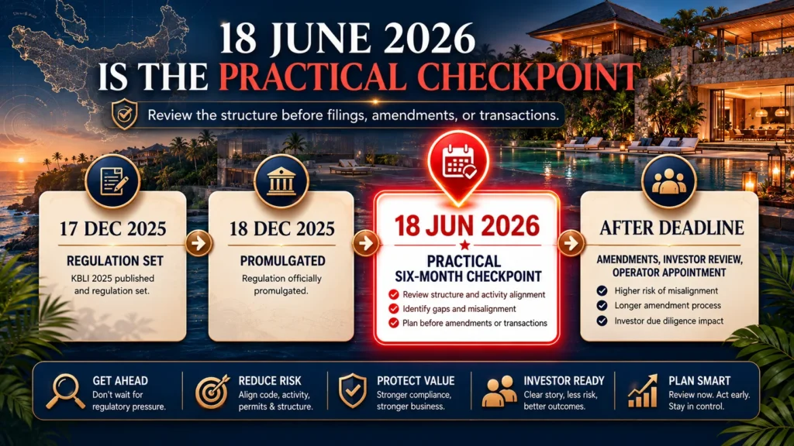
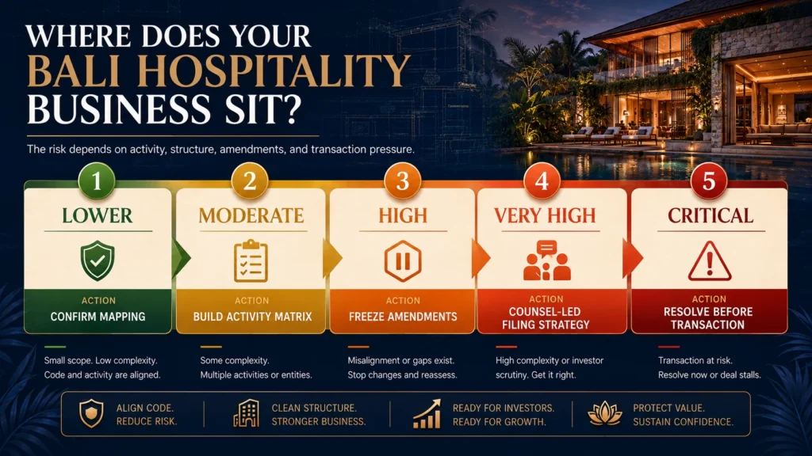
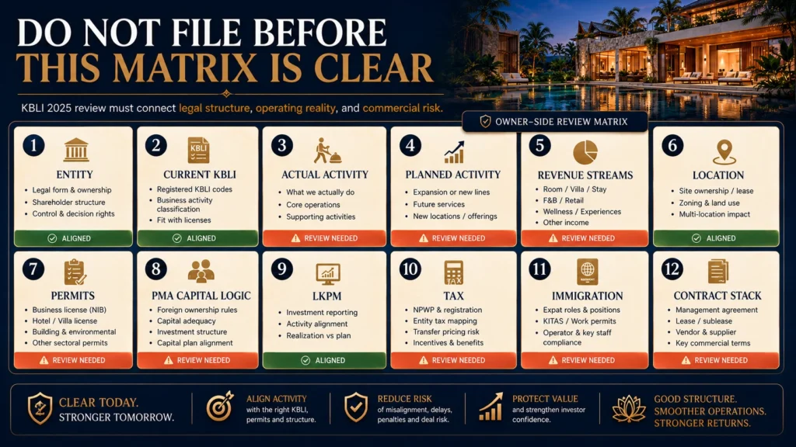

KBLI 2025 Bali hospitality compliance is not a small paperwork issue for owners, investors, and operators.
Most Bali hospitality businesses will not run into trouble because they forgot to update a code.
The bigger risk is that the code, real operating activity, revenue model, permits, ownership structure, and investor story no longer match.
For hotel owners, villa developers, lifestyle F&B operators, wellness businesses, asset managers, and foreign investors in Bali, KBLI 2025 is not a small administrative update. Owners should treat it as a structure-and-scope review before any OSS amendment, deed change, shareholder change, expansion, operator appointment, refinancing, sale, or pre-opening milestone.
This article is not legal advice. It gives owners and operators a practical hospitality risk framework. Before making any filing decision, owners should check the position with qualified Indonesian counsel and confirm the latest OSS, BKPM, BPS, and Bali DPMPTSP position.
Key Takeaways
- KBLI 2025 Bali hospitality compliance is now a management issue, not just an administration issue. The official record gives Peraturan BPS No. 7 Tahun 2025 a promulgation date of 18 December 2025, and Article 5 gives existing KBLI users six months to adjust.
- For practical planning, 18 June 2026 is the critical transition date.
- Bali hospitality businesses carry exposure because many assets combine accommodation, F&B, wellness, recreation, rentals, real estate, management, and concierge activity across several business layers.
- PMA investment thresholds are not generic for hospitality. Food and beverage, accommodation, and property structures follow specific treatment under the current OSS investment framework.
- The safest approach is not “update the code quickly.” It is “map the real business first, then decide whether to amend, restructure, defer, or seek formal clarification.”
Why KBLI 2025 Bali Hospitality Compliance Matters Now
KBLI 2025 is not a draft and not a rumour. Peraturan BPS No. 7 Tahun 2025 on Klasifikasi Baku Lapangan Usaha Indonesia carries an official set date of 17 December 2025, a promulgation date of 18 December 2025, and an in-force status on the official Indonesian regulation database.
The regulation defines KBLI as the classification of economic activities in Indonesia that produce goods or services. That matters because KBLI is not only a statistical label. In practice, it connects to business licensing, OSS records, NIB, investment reporting, and how authorities understand a company’s registered activity.
Article 5 of the official regulation creates the key deadline. It gives existing KBLI users six months after promulgation to adjust to the new regulation. Since promulgation took place on 18 December 2025, the practical six-month cut-off is 18 June 2026.
For a clean, simple business, the transition may look manageable. A Bali hospitality platform with several activities under one or more entities needs a deeper review.
A hotel may include more than rooms. A villa platform may function as more than real estate. A wellness retreat may sell more than accommodation. Some lifestyle clubs combine F&B, fitness, recreation, membership, bodywork, recovery, retail, events, and operator services.
That is where KBLI becomes commercial.

What Is KBLI 2025?
KBLI 2025 is Indonesia’s updated standard classification for business activities. BPS released KBLI 2025 as an update to KBLI 2020, and later released a KBLI 2020 - 2025 conversion table to support transition and comparability.
The important point for hospitality owners is this:
KBLI is not just “what code is in the system.” It is the official classification logic behind what the business can do and what authorities expect it to do.
For Bali hospitality assets, relevant activity can sit across several categories:
| Hospitality Layer | Typical Business Reality | Why KBLI Review Matters |
|---|---|---|
| Accommodation | Hotel, villa, serviced residence, retreat stay | The stay product must align with the registered activity and permits |
| F&B | Restaurant, café, breakfast outlet, beach club, bar without alcohol assumption | F&B has its own investment and licensing logic |
| Wellness / Fitness | Gym, yoga, recovery, wellness programming | Wellness may sit outside pure accommodation activity |
| Recreation | Experiences, events, guest programming, sports, leisure activities | Recreation can create additional classification exposure |
| Real Estate | Landholding, development, rental, sale, residence structure | Real-estate codes can create risk when the company actually runs hospitality activity |
| Management / Consulting | Asset management, operator services, advisory, head office functions | Consulting codes become sensitive when companies use them as operating shells |
| Travel / Concierge | Tours, transfers, agency-like services, rentals | Travel and concierge activity can create separate licensing requirements |
Not every asset needs every code. The real issue is whether the activity, revenue stream, and company structure work together.
This is similar to the logic behind hotel Product DNA: the project must reflect what it actually delivers to the guest and how it actually operates, not labels that look clean in a document.
What Is the 18 June 2026 Deadline?
The 18 June 2026 date comes from the six-month transition requirement in Article 5 of Peraturan BPS No. 7 Tahun 2025.
That does not mean every hospitality company should rush into OSS and start changing codes without analysis. That can create unnecessary risk.
Owners should treat the deadline as a management decision date:
- Entity inventory: which companies sit in the structure?
- Current codes: which KBLI codes sit in OSS today?
- Actual activity: what does the business really do?
- Revenue streams: what income exists today or will exist after opening?
- Permit dependencies: which permits, PB, PB UMKU, NIB, LKPM, tax profile, and contracts depend on those activities?
- Planned changes: what will change before or after 18 June 2026?
- Review trigger: could an amendment trigger a deeper review?
- Decision path: should the owner amend, restructure, defer, or seek clarification?
The wrong sequence can create the problem.
For example, a company may have operated under a legacy code that no longer fits the real business. A rushed amendment can expose that mismatch before the legal, commercial, and operational structure is ready.
Why Bali Hospitality Businesses Are More Exposed
Bali is not just dealing with the national KBLI 2025 transition. Bali also has a local scrutiny overlay around foreign-owned companies and low-risk codes.
Current practitioner reporting says Bali is moving to restrict certain KBLI categories for foreign-owned PT PMA structures, with KBLI 70209 reportedly closed for new foreign applications and six other categories under review. Owners should treat this as a serious risk screen, not as a substitute for filing-day confirmation from counsel, OSS, BKPM, or Bali DPMPTSP.
This is especially relevant for Bali hospitality because many projects do not operate as simple hotels.
Common exposure patterns include:
| Business Archetype | Why It Is Exposed |
| Villa rental business with real-estate code | The company may run short-term hospitality activity through a property code |
| PT PMA consulting shell with operating control | The management-consulting code may not match the real operating activity |
| Lifestyle F&B operator | F&B can carry local sensitivity and specific PMA investment logic |
| Wellness / yoga / fitness operator | Wellness and fitness activity may sit outside accommodation activity |
| Mixed-use resort platform | Accommodation, F&B, wellness, recreation, retail, rentals, and operator services may need structured mapping |
| Pre-opening project with future operator | The legal entity may not yet match the future operating model |
The existing licence is not always the key risk. The next action often creates the real exposure: a deed amendment, shareholder change, director change, NIB update, KBLI addition, operator appointment, expansion, sale, or investor due diligence process.
The Core Problem: Code, Activity, and Operating Reality Often Do Not Match
In hospitality, the real business is rarely one-dimensional.
A boutique hotel may say “accommodation” in the investor deck, but the commercial model may depend on:
- breakfast and restaurant revenue;
- spa, recovery, or wellness packages;
- event revenue;
- third-party operator services;
- memberships;
- retail;
- villa rental pools;
- transfers and excursions;
- branded residence management;
- owner-use rules;
- external non-staying guests.
That is why KBLI review must start with the operating model, not with the code list.
The question is not only:
“What KBLI do we have?”
The better question is:
“What business are we actually running, and what evidence would prove that the structure matches the activity?”
This is also why serious hospitality investors need more than a narrow legal filing review. A proper review connects licensing, concept, guest journey, revenue architecture, staffing, F&B, wellness, operator structure, and commercial feasibility. The same discipline applies when owners test whether a hotel feasibility study is wrong because the assumptions do not connect to operating reality.
What Most Owners and Investors Get Wrong
Many owners treat KBLI as a back-office administration issue. That is a mistake.
KBLI can affect investor due diligence, bank review, operator search, licensing, LKPM, tax consistency, immigration support, and asset sale preparation.
A buyer, lender, operator, or family office does not only ask whether the project is beautiful. They ask whether the operating platform is clean.
A weak KBLI structure can raise uncomfortable questions:
| Risk Question | Why It Matters |
| Legal-activity match | A mismatch can affect licensing confidence |
| Revenue model support | F&B, wellness, recreation, and rentals may need separate review |
| Operator takeover risk | Operators do not want inherited licensing ambiguity |
| Amendment risk | A routine change can become a review event |
| PMA investment support | Hospitality capital rules can vary by activity |
| LKPM consistency | Reporting inconsistency can create audit exposure |
| Exit readiness | Buyers may discount or delay if the structure lacks clarity |
This is why KBLI 2025 Bali hospitality exposure should sit in the owner’s risk register, not only in the legal folder.
Family-backed hospitality capital should also review structure early. As discussed in Zenith’s article on family office hospitality investment, hospitality is not passive property. It is an operating business with real estate underneath.
The Zenith View: This Is a Structure-and-Scope Issue, Not a Filing Exercise
The operator-first view is simple:
A hospitality business should structure itself around what it actually does, not around the easiest code that once helped register the company.
That means the KBLI review should start from the asset outward:
- Guest purchase: what does the guest buy?
- Company offer: what does the company sell?
- On-site activity: what happens on the property?
- Partner activity: what do partners or vendors handle?
- Revenue source: where does income come from?
- Permit support: which licences and permits support those revenue streams?
- Employment and contracts: which entity hires staff or signs agreements?
- Income recipient: which entity receives revenue?
- Investment reporting: which entity reports realization?
- Review target: which entity will a buyer, lender, operator, or authority examine?
A legal memo alone is not enough if it does not understand the hospitality operating model.
Likewise, an operator review is not enough if it ignores the legal and regulatory framework.
The right approach integrates legal counsel, OSS/licensing specialists, tax advisors, owner representatives, and hospitality operator-side advisors around the same entity-by-entity matrix.
For KBLI 2025 Bali hospitality projects, that matrix should not only show codes. It should show the real business model.

Bali Hospitality KBLI Risk Map
The following risk map is not a legal conclusion. It is a practical owner-side screening tool.
| Risk Level | Situation | Typical Management Response |
| Lower | Clean accommodation operator with correct permits, clean NIB, clean LKPM, and no immediate amendments | Confirm KBLI 2025 mapping and update governance files |
| Moderate | Hotel or villa asset with F&B, wellness, recreation, or rental activity not fully mapped | Build activity matrix and check whether the asset needs additional review |
| High | PT PMA using real estate, consulting, or low-risk code while operating hospitality activity | Freeze non-essential amendments and review structure before filing |
| Very High | Bali PT PMA touching reported sensitive codes and planning shareholder, deed, or OSS changes before or after 18 June | Use a counsel-led filing strategy plus owner-side operating review |
| Critical | Asset sale, refinancing, operator appointment, or investor onboarding with unresolved KBLI mismatch | Resolve or disclose before the transaction process advances |
Operational Implications
KBLI 2025 affects operations because operations create evidence.
A regulator, buyer, operator, or investor can look at the business and ask whether the registered code matches reality.
Evidence may include:
- guest invoices;
- room revenue;
- F&B receipts;
- wellness package revenue;
- third-party contracts;
- staff roles;
- menus and service lists;
- website claims;
- booking engine descriptions;
- OTA listings;
- signage;
- Google Business Profile categories;
- tax invoices;
- LKPM reporting;
- lease or management agreements;
- spa, gym, clinic, or recovery descriptions;
- operator SOPs and service menus.
This is why copywriting and operations must not contradict the licence structure.
If the website sells a wellness retreat, the invoices show recovery treatments, the guest journey includes paid bodywork, and the company uses an unrelated activity code, the risk becomes structural.
For pre-opening projects, owners should include KBLI review in the operating-readiness gate, alongside SOPs, staffing, training, commercial activation, and systems. Zenith’s pre-opening SOP checklist explains why pre-opening should function as operational rehearsal, not paperwork.
Commercial Implications
The commercial risk is not limited to fines or administrative delay.
For hospitality owners, KBLI mismatch can create five direct business consequences.
1. Transaction friction
A serious buyer or investor will review the entity structure. If the code does not match the operating activity, the deal can slow down, require conditions precedent, or trigger price pressure.
2. Operator hesitation
A professional operator may avoid an asset when the licence stack does not support the operating model. This matters especially for mixed-use resorts, wellness retreats, branded residences, and villa platforms.
3. Expansion delays
Adding F&B, wellness, recovery, recreation, membership, events, or external guest access can require more than a marketing decision. It may require activity and permit review.
For example, a hotel that wants to turn F&B into a true profit centre needs more than a menu. It needs concept logic, service flow, pricing, compliance clarity, and operating controls. This is the same commercial discipline behind hotel F&B concept development in Bali.
4. Reporting inconsistency
LKPM, tax classification, OSS data, and actual revenue must stay coherent. A mismatch can surface later, especially when the business grows or seeks external capital.
5. Asset value discount
Unclear compliance reduces confidence. In hospitality investment, uncertainty becomes a discount.
A strong brand story does not compensate for a weak operating structure. As Zenith has argued in the context of Bali boutique hotel brand strategy, brand only creates value when it has product logic, service logic, commercial logic, and operating discipline behind it.

What To Check Before Making Any OSS, Deed, Shareholder, or Expansion Change
Before changing anything, owners should build a clear matrix.
| Review Area | What To Check |
| Entity | PT name, shareholder structure, PMA/PMDN status, deed history |
| Current KBLI | Existing codes, code descriptions, risk level, NIB linkage |
| Actual Activity | What the business really does today |
| Planned Activity | What the business will do after opening or expansion |
| Revenue Streams | Rooms, villas, F&B, wellness, retail, events, rentals, management fees |
| Location | Project address, coordinates, land/building use, site evidence |
| Permits | NIB, PB, PB UMKU, sector permits, local permits |
| PMA Capital Logic | Investment value by KBLI, location, F&B/accommodation exceptions |
| LKPM | Past reporting, consistency with actual investment and activity |
| Tax | Tax classification and invoice reality |
| Immigration | Foreign director, investor, or worker permit dependency |
| Contract Stack | Lease, HMA, operator agreement, villa pool, service agreements |
| Filing Strategy | Amend now, defer, restructure, or seek clarification |
Under the current OSS investment framework, Permen Investasi dan Hilirisasi/BKPM No. 5 Tahun 2025 is a core source for risk-based licensing procedures, OSS implementation, investment thresholds, transition clauses, and reporting logic. Owners should review it together with PP No. 28 Tahun 2025 on Risk-Based Business Licensing.
Make the decision before a trigger event, not after.
Trigger events include:
- deed amendment;
- shareholder change;
- director or commissioner change;
- KBLI addition;
- location change;
- NIB update;
- expansion of business activity;
- new F&B or wellness revenue stream;
- operator appointment;
- investor onboarding;
- asset sale;
- loan or refinancing process.
Practical Action Path for Bali Hospitality Owners
Freeze non-essential filings first
Do not rush into OSS amendments before the structure is understood.
Map actual business activity
List what the business does, not what the deed says it does.
Compare current KBLI to KBLI 2025
Use the BPS conversion table as a starting point, but do not rely on automatic mapping alone.
Screen Bali sensitivity
Check whether the entity touches sensitive Bali categories such as management consulting, real estate, restaurant/café, travel agency, rental, recreation, or fitness/wellness.
Recalculate PMA investment logic
Hospitality is not always treated under one generic PMA rule. F&B and accommodation/property have specific treatment.
Align the operating model
The guest journey, revenue streams, permits, contracts, staff structure, and reporting should tell the same story.
Decide the filing sequence
Structure first. Filing second. Reporting third. Commercial rollout fourth.
FAQ
Does every Bali hospitality business need to change its KBLI before 18 June 2026?
Not necessarily in the same way. The official regulation creates a six-month adjustment requirement, but the correct response depends on the entity, current KBLI, real activity, permits, PMA status, location, and planned changes. A clean hotel operator may need confirmation and mapping. A villa or wellness platform using a mismatched real-estate or consulting code may need deeper restructuring before filing.
Is an existing PT PMA licence in Bali automatically invalid because of KBLI 2025?
No owner should assume automatic invalidity without review. Current practitioner guidance says existing licences may remain valid, but changes such as deed amendments, director changes, shareholder changes, activity expansion, or KBLI additions can trigger review. Owners should not assume safety simply because the NIB still appears active.
Why are villa businesses especially exposed?
Villa businesses carry exposure because they often sit between real estate and hospitality. A company may own, rent, sell, manage, or operate villas for short-term stays. Those activities do not always fall under the same code. If the formal code says one thing but the business earns revenue from another, the mismatch can become material during amendment, transaction, or enforcement review.
Why does F&B matter for hotel and resort owners?
F&B matters because it can be a separate business activity with its own investment and licensing implications. Under the current PMA investment rule, food and beverage services use a specific threshold logic at the two-digit KBLI level per location area. Hotel owners should review whether restaurant, café, breakfast, event, or external guest F&B revenue has proper support.
Why does wellness matter?
Wellness matters because many Bali hospitality projects now sell more than rooms. Yoga, fitness, recovery, spa, bodywork, diagnostics, recreation, and membership models may create activities beyond pure accommodation. When the operating model includes external guests, paid wellness services, or clinical-adjacent claims, owners need a more careful KBLI and permit review.
Can an operator solve the KBLI issue?
No. A hotel operator can improve service, systems, staffing, commercial discipline, and guest experience, but it cannot fix a structurally wrong licensing platform alone. Before appointing an operator, the owner should confirm that the entity, permits, KBLI, contracts, staffing model, and revenue streams support the intended operation.
What should owners do before selling or refinancing a Bali hospitality asset?
Owners should prepare an entity-by-entity compliance and activity matrix before due diligence starts. The matrix should cover current KBLI, KBLI 2025 mapping, actual activity, permits, PMA capital logic, LKPM, tax profile, contracts, and planned remediation. If the buyer finds the issue first, it becomes a negotiation problem.
What does KBLI 2025 Bali hospitality review mean in practical terms?
KBLI 2025 Bali hospitality review means checking whether the formal company structure matches the real business model. The review should connect current KBLI, target KBLI 2025 mapping, OSS data, NIB, permits, PMA capital logic, LKPM, tax profile, contracts, guest-facing services, and planned revenue streams. It is not just a code update. It is a business-structure review.
Summary Takeaways
KBLI 2025 is not only a code update. For Bali hospitality businesses, it tests whether the company structure still matches the real operating model.
Article 5 of Peraturan BPS No. 7 Tahun 2025 creates a six-month adjustment requirement after promulgation, which makes 18 June 2026 the practical transition date.
The Bali layer matters because foreign-owned low-risk codes face heightened scrutiny, especially where companies use easy administrative structures for broader hospitality activity.
Commercial risk extends beyond regulation. It can affect investor confidence, operator appointment, asset sale, refinancing, LKPM, tax consistency, immigration support, and expansion planning.
The correct sequence is not “update quickly.” The correct sequence is:
Map the real business. Review the code. Screen Bali sensitivity. Check PMA capital logic. Decide the structure. Then file.
That is the core of KBLI 2025 Bali hospitality readiness.
CTA
Zenith Hospitality Global supports owners, investors, developers, and operators with owner-side hospitality structure reviews, pre-opening governance, Product DNA, operating model design, and commercial readiness.
If your Bali hospitality business has a hotel, villa, F&B, wellness, recreation, rental, management, or mixed-use structure, review your KBLI 2025 Bali hospitality exposure before making OSS, deed, shareholder, expansion, operator, or transaction decisions.
Request an owner-side KBLI 2025 hospitality exposure review before the next filing or commercial trigger.
For related owner-side thinking, explore the Zenith Hospitality Global blog.
Start a conversation